열흘 동안 가장 오래 붙잡은 건 계단이었습니다. 지금까지는 실제 단을 밟는 대신 계단 위에 보이지 않는 경사면을 덮고, 그 위를 미끄러지게 했습니다. 흔한 방식이고 잘 굴러가지만, 갈메기는 지하철역과 골목, 건물 지하실을 계속 오르내립니다. 계단이 자주 보이니 발이 단을 무시하고 미끄러지는 게 계속 거슬렸습니다.
경사면을 걷어내고 진짜 단을 밟게 만들었습니다. 올라가는 것보다 내려가는 쪽이 훨씬 까다로웠습니다. 발을 내밀고 바닥을 찾는 동안 몸을 너무 굳히면 로봇처럼 보이고, 너무 풀면 그대로 굴러떨어졌습니다. 착지 시점과 무게 이동, 그때 상체가 풀리는 정도를 따로 잡았습니다. 검증용으로 코스 21개짜리 실험실도 만들었습니다. 2m짜리 큰 계단부터 0.51m 쓰레기통, 0.30m 보도블록 턱까지 넣었습니다. 양복 입은 남자가 쓰레기통 위에 올라갔다 내려오는 걸 스무 번쯤 보고 있으면 잠깐 내가 뭘 만들고 있는지 잊게 됩니다.
같은 기간에 9월 초에 빠르게 만들었던 AI 연동 도구도 대부분 걷어냈습니다. 도구를 빨리 만들 수 있게 되자, 프로젝트 안에 제가 구조를 제대로 따라가지 못하는 것까지 같이 늘었습니다. Blender에서 간접광을 가져오던 576줄짜리 애드온도 지웠습니다. 만드는 데 몇 분 걸렸다는 건 유지하는 데 몇 분이면 된다는 뜻이 아니었습니다. 필요한 자동화만 남기고, 이해하지 못한 채 붙어 있던 것들은 다시 정리했습니다.
성능도 이번에 처음부터 다시 쟀습니다. 도시 한 블록에 군중 100명, 차량 26대, 캐릭터 8명을 세워놓은 테스트에서 프레임 시간은 평균 3.30ms, GPU는 1.18ms, 물리 CPU는 2.41ms로 찍혔습니다. 그래픽보다 물리 쪽이 더 무거웠습니다. 그리고 게임을 켠 뒤 레벨 파일을 읽기 시작하기까지 7.9초가 비어 있다는 것도 처음 확인했습니다. 정작 레벨 자체를 읽는 데는 2.3초밖에 안 걸렸습니다. 한 프레임을 몇 ms 줄이는 데만 신경 쓰다가, 플레이어가 처음 기다리는 시간은 제대로 재보지도 않았던 셈입니다.
스터터링 원인도 코드가 아니었습니다. 램은 16GB인데 실행 중인 것들이 23.8GB를 요구하고 있었고, Godot 에디터만 8.3GB를 쓰고 있었습니다. 누수인 줄 알았는데 열어둔 대형 씬 탭이 열 개였습니다. 탭을 닫으니 바로 내려갔습니다. 프로파일러보다 먼저 창부터 정리했어야 했습니다.
반복해서 손으로 하던 일은 몇 개 자동화했습니다. 캐릭터 뼈대는 손가락 위치까지 검사해서 이상한 리그를 걸러내고, 도시 에셋 362개는 크기에 따라 가시거리를 한 번에 정할 수 있게 했습니다. 소프트 바디 계산도 정점 셰이더 쪽으로 옮겨 2.53ms에서 0.29ms까지 줄였습니다. 화면에 바로 티가 나는 작업은 아니지만, 이런 게 쌓이니 그 다음 작업이 훨씬 덜 번거로워졌습니다.
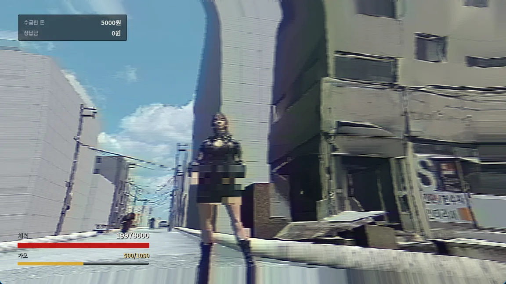
결국 이 골목을 제대로 걸어다니게 하려고 하는 일들입니다.
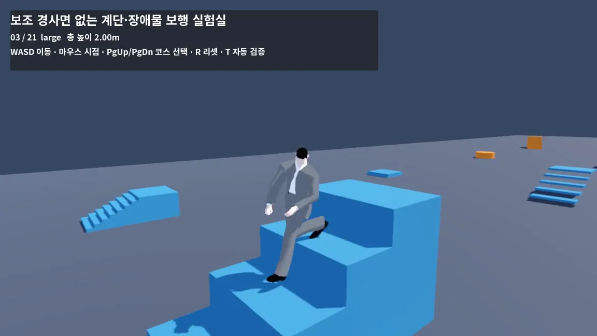
경사면 없이 진짜 단을 밟고 내려갑니다. 여기까지 오는 데 열흘.
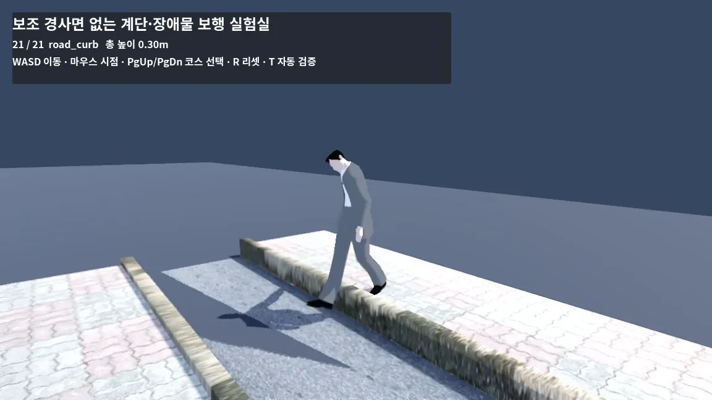
30cm 보도블록 턱. 코스 21개 중 실제로 제일 자주 밟게 될 높이입니다.
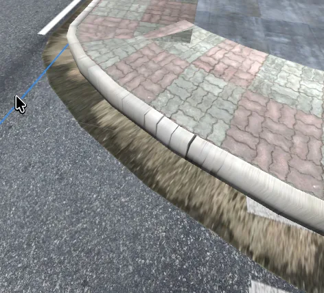
실험실을 나오면 이런 걸 밟게 됩니다. 결국 이걸 위한 열흘이었습니다.
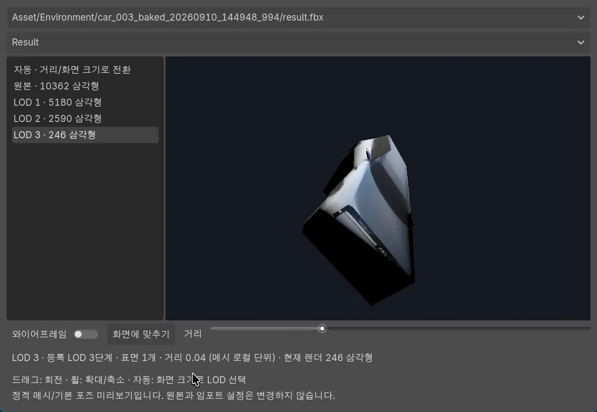
멀어지면 삼각형 1만 개짜리를 246개짜리로 바꿔 끼웁니다. 눈으로 확인하려고 만든 뷰어.
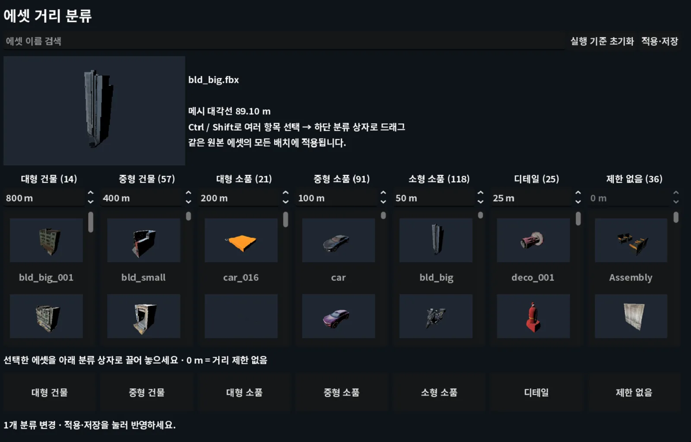
에셋 362개를 크기별로 나눠 각각 몇 미터까지 보일지 정합니다. 손으로 하면 하루입니다.
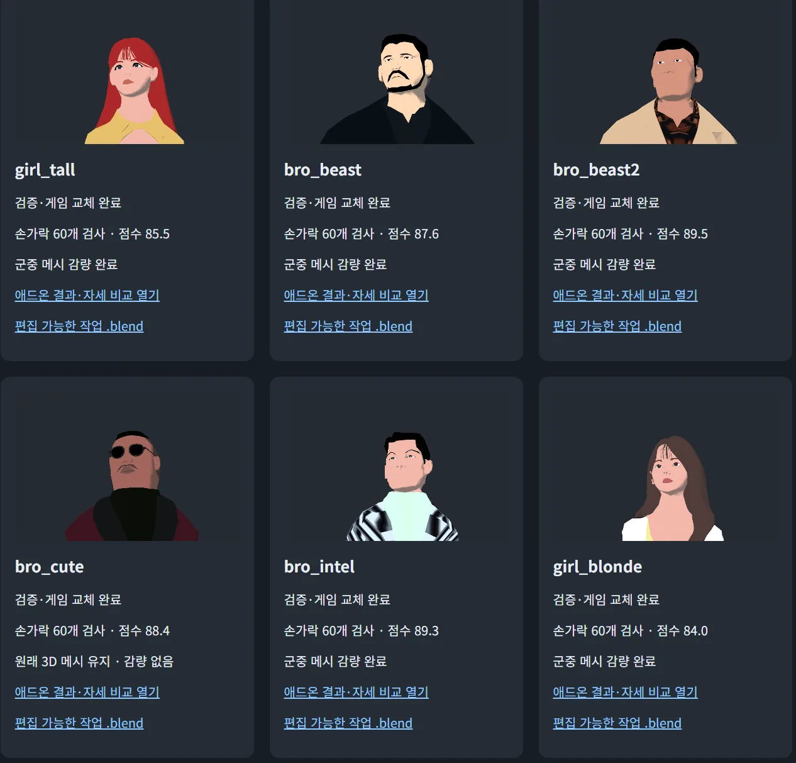
리깅 검수를 자동으로 돌린 결과. 손가락 60개를 일일이 재서 점수를 매깁니다.
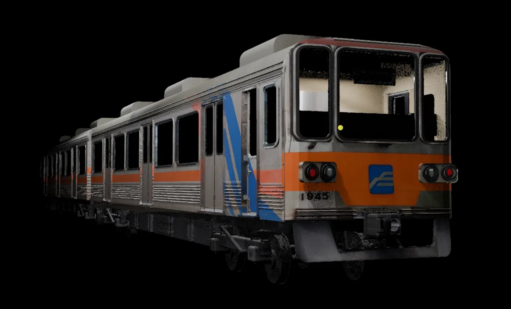
역만 있고 열차가 없으면 섭섭하니까요.
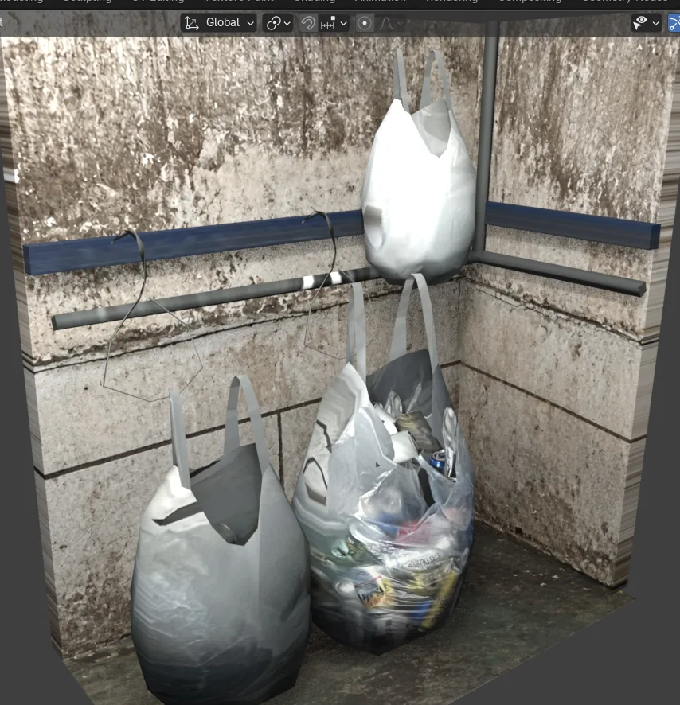
이런 걸 만들고 있을 때가 제일 즐겁습니다.
넘어진 몸을 다시 세우기
NPC마다 리깅 출신이 달라서 뼈대가 조금씩 달랐습니다. 평소에는 버틸 만했는데 랙돌이 켜지면 문제가 바로 드러났습니다. 골반 아래 다리가 엉뚱한 곳에 매달리거나, 어깨 웨이트가 몸통까지 끌려가면서 접히면 안 되는 방향으로 접혔습니다. 보스와 블로커의 몸을 다시 뽑고, 어깨와 골반 바인딩도 원본 체형 기준으로 다시 맞췄습니다. 중간에는 얼굴이 통째로 무너지는 실패도 여러 번 나왔습니다.
이번 작업에서 제일 크게 달라진 건 넘어진 캐릭터가 스스로 일어나게 된 것입니다. 기상 애니메이션을 바로 재생하는 대신, 랙돌 상태에서 손을 짚고 무릎을 당기고 발을 딛은 다음 골반을 세웁니다. 단계는 시간으로 넘기지 않고 실제 접촉점을 보고 바뀝니다. 막히면 반대쪽으로 다시 굴러 팔다리를 풀고 재시도합니다. 랜덤한 방향으로 74번 떨어뜨려 전부 일어나고 5초 동안 서 있는 것까지 확인했습니다. 아직 손이 튀거나 발이 바닥에 조금 박히는 프레임은 남아 있습니다.
도시는 지상과 지하철을 한꺼번에 들고 있지 않도록 나눴습니다. 계단을 오르내릴 때 필요한 쪽만 읽고 반대편은 내려놓습니다. 왕복 테스트에서 프레임 시간은 26ms에서 17ms로 줄었고, 지하로 내려가면 GPU 메모리도 약 120MB가 빠졌습니다. 도로망은 신호등과 보행자 경로에도 같이 쓰게 했습니다. 차가 지나간 뒤 사람이 건너는 평범한 장면이 생각보다 손이 많이 갑니다.
지하철 조명은 Blender의 Cycles에서 간접광만 구운 뒤 Godot에 다시 얹어봤습니다. 아래 두 장은 같은 장면이고, 한쪽은 텍스처를 벗겨 빛만 남긴 상태입니다. 붉은 천장에서 번진 색이 바닥까지 내려오는 느낌을 잡고 싶었습니다.
전투 렉은 한동안 스트리밍을 의심했는데 원인은 다른 곳에 있었습니다. 예전에 옵션에서 바꿔놓은 물리 틱 143Hz가 설정 파일에 저장된 채 매번 복원되고 있었습니다. 필요 이상으로 물리를 돌리고 있었고, 60Hz로 되돌리자 30ms가 11ms까지 내려갔습니다. 거기에 다섯 시간 전에 띄워둔 헤드리스 테스트 프로세스도 코어 두 개를 먹고 있었습니다. 이번 문제는 새 코드를 쓰는 것보다 이미 켜져 있는 것부터 찾는 게 먼저였습니다.
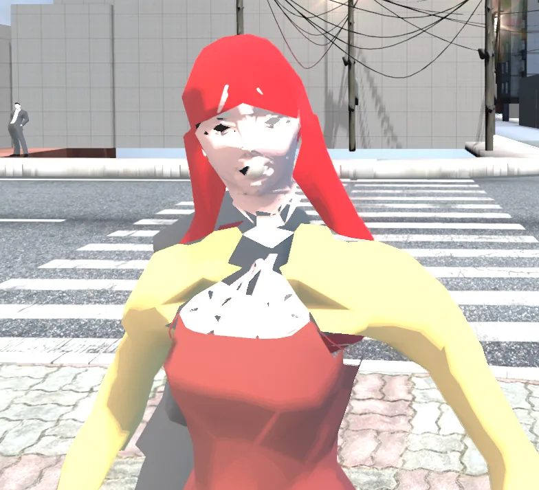
리그를 갈아엎는 도중. 이런 걸 수십 번 봤습니다.
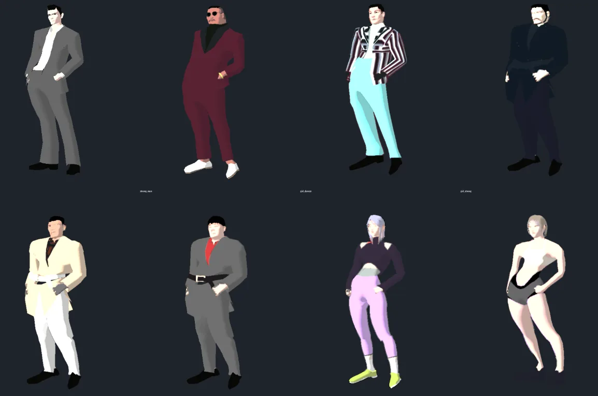
정리를 마친 NPC들. 이제 뼈대가 전부 같습니다.
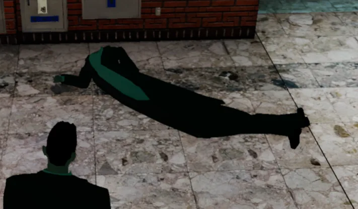
여기서 다시 일어납니다. 애니메이션이 아니라 물리로.
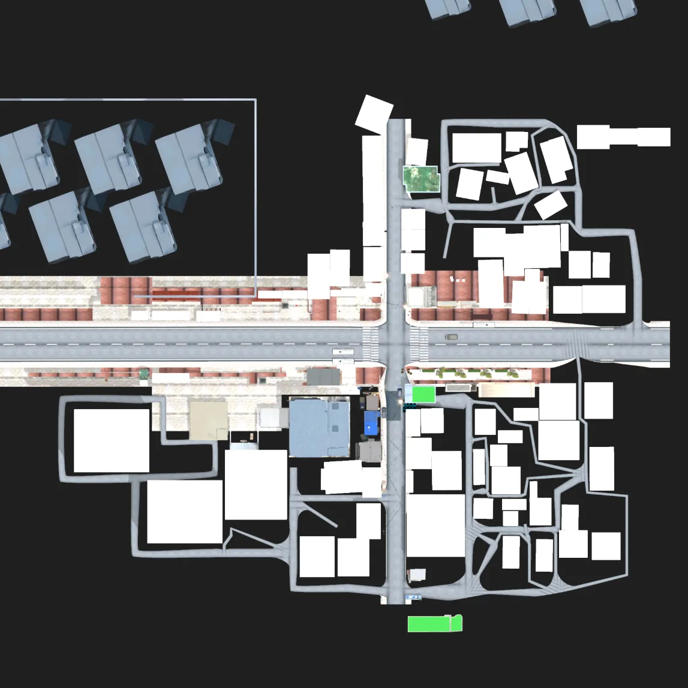
위에서 본 도시. 이걸 구역으로 쪼개 필요한 곳만 읽습니다.
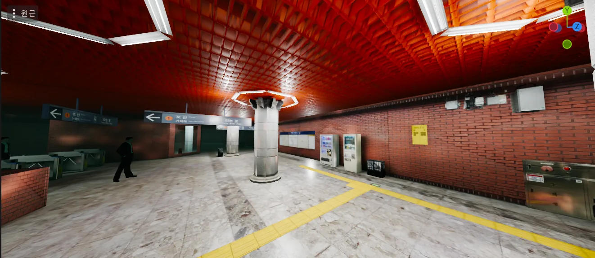
간접광을 구운 지하철역.
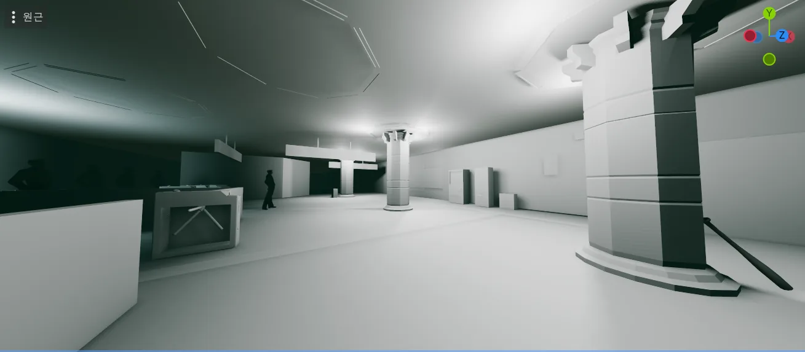
같은 장면에서 텍스처를 전부 벗긴 것. 빛만 남았습니다.
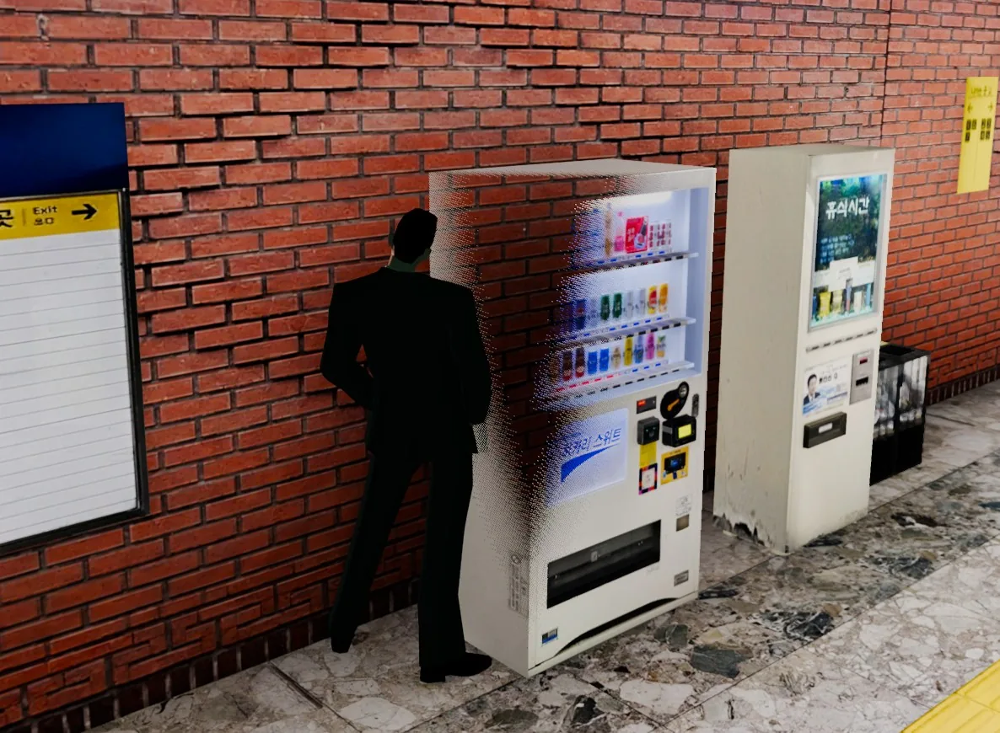
결국 만들고 싶은 건 이런 장면입니다.
AI로 도구를 만들기 시작했습니다
초여름부터 AI에 코딩을 맡겨봤지만 처음에는 속도가 붙기보다 오히려 자주 멈췄습니다. 제가 구조를 다 읽지 못한 상태에서 코드가 빠르게 늘어나면, 어디까지 건드렸는지 확인하는 데 더 오래 걸렸습니다. 한동안은 코딩 쪽을 피하고 아트 작업만 한 적도 있습니다.
최근에는 게임 코드를 통째로 맡기기보다, 제가 계속 손으로 하던 일을 줄이는 도구를 만드는 데 주로 쓰고 있습니다. 도로를 편집하는 툴, 반복 전투를 돌려보는 테스트 환경, VFX를 빠르게 비교하는 검증 도구 같은 것들입니다. 예전에는 마음에 맞는 애드온을 찾다가 포기하던 일을, 필요한 모양으로 바로 만들어볼 수 있다는 점은 확실히 큽니다.
다만 빨리 만들어진 도구가 오래 남는 도구인지는 아직 모르겠습니다. 기능이 늘어나는 속도만 따라가다 보면 제가 모르는 구조도 같이 쌓입니다. 지금은 무엇이든 자동화하는 것보다, 나중에 제가 다시 열어도 이해할 수 있는 범위까지만 쓰는 쪽을 찾는 중입니다.
게임 쪽 고민은 여전히 같습니다. 전투만 반복해서 끝까지 끌고 가는 비뎀업을 만드는 건 제 역량으로 버겁다고 느낍니다. 대신 장소가 주는 느낌은 더 오래 붙잡을 수 있습니다. 사람이 움직이는 방식, 색, 환경음, 골목의 폭 같은 것들입니다. 플레이어가 싸움 하나보다 어느 골목에 서 있었는지를 기억하게 만들 수 있다면, 갈메기는 그쪽이 더 맞다고 생각합니다.
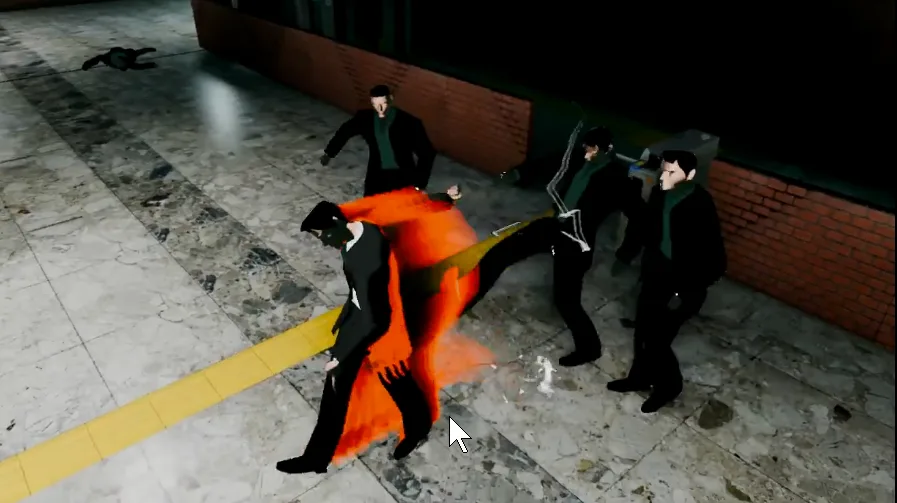
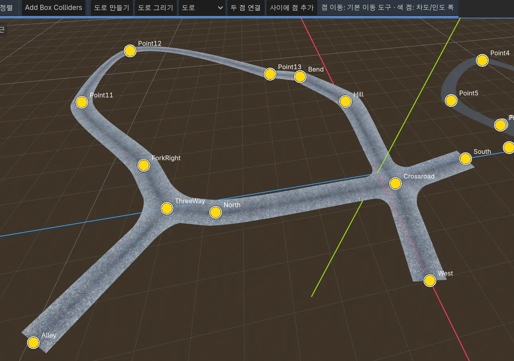
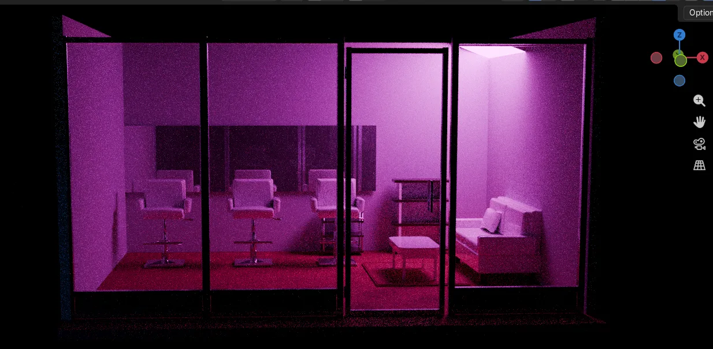
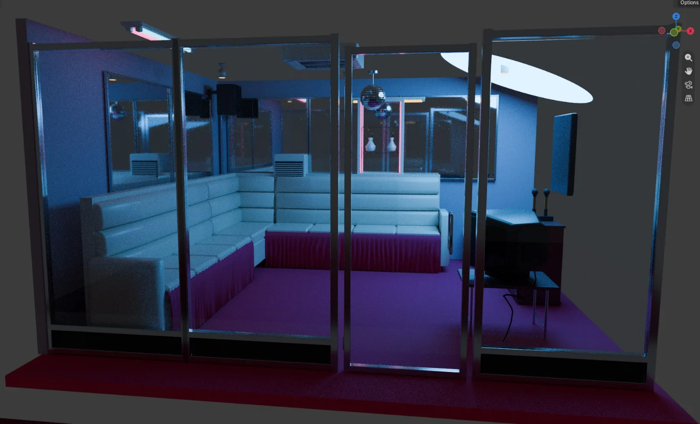
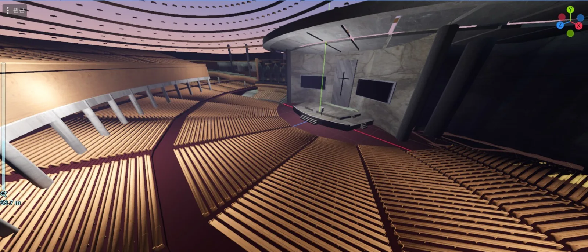
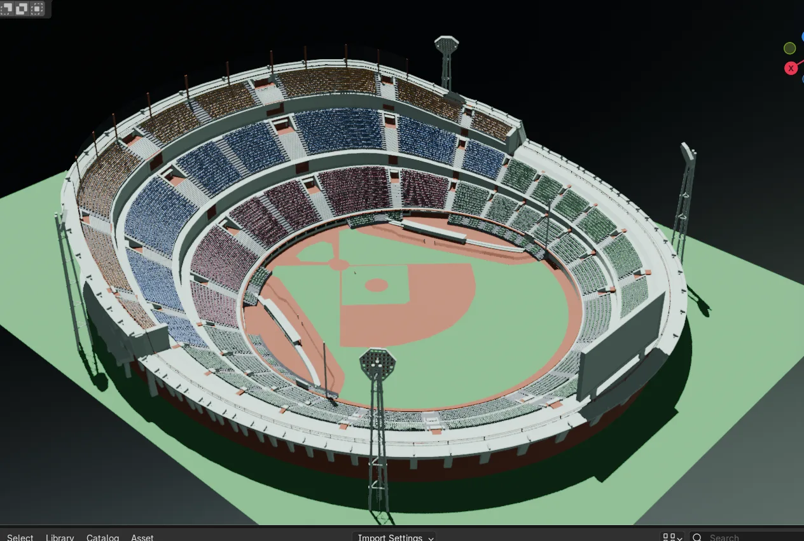
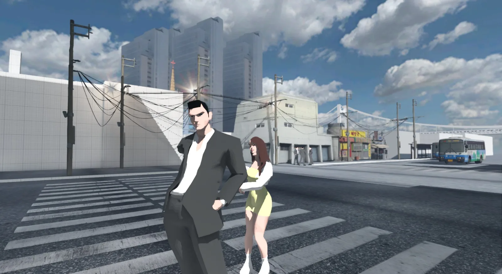
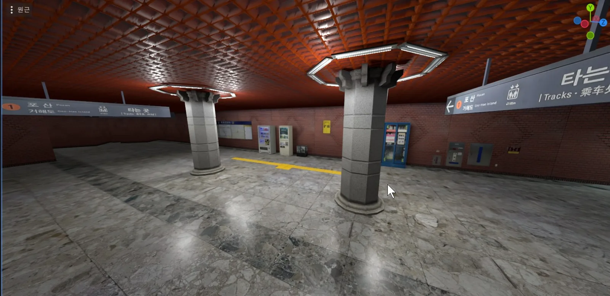
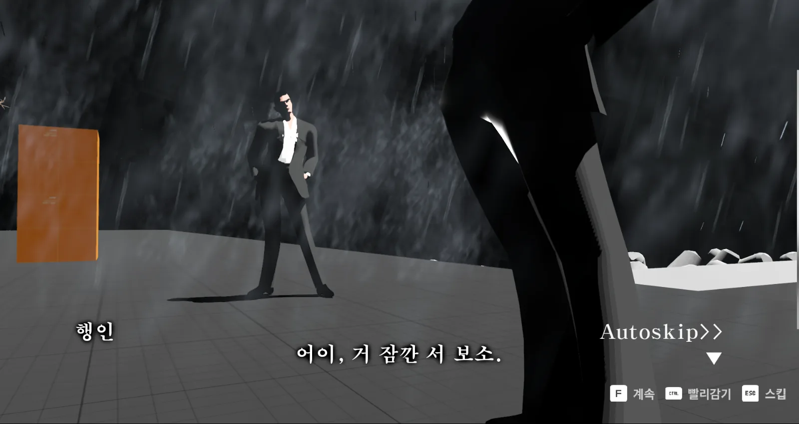
혼자 서는 법부터 다시
8월 하순은 거의 전부 사람 몸을 움직이는 데 썼습니다. 던지기와 벽꽝, 이즈나 드롭을 넣고, 사람이 유리창을 뚫고 나가면 파편도 같이 튀게 만들었습니다. 그 다음은 파쿠르와 클라이밍이었습니다. 턱을 짚고 올라가고, 벽을 타고, 3단 대시로 내달리는 것까지 붙였습니다. 도시가 넓어질수록 이동이 재미없으면 맵도 같이 죽는다는 게 점점 분명해졌습니다.
그러다 사람 몸에 관절 모터를 달아서 스스로 균형을 잡게 하는 실험까지 갔습니다. 제가 쓰던 60Hz 물리 조건에서는 안정적으로 세우는 데 실패했습니다. 발바닥 접촉이 너무 빠르게 바뀌어 보정이 계속 뒤늦게 따라갔습니다. 대신 그 과정에서 만든 착지점 규칙은 다리 IK에 옮겼습니다. 완전히 서게 만드는 데는 실패했지만, 맞고 비틀거리거나 넘어지는 쪽은 훨씬 자연스러워졌습니다.
지하철역도 이때부터 짓기 시작했습니다. 부산 지하철에서 자주 보이는 주황색 격자 천장은 실제 요철 대신 패럴랙스 재질로 깊이를 속였습니다. 군중은 수천 명까지 세워보고 부하를 재봤습니다. 사람이 많아야 도시처럼 보이는데, 사람이 많아지면 바로 프레임이 무너집니다. 이건 아마 끝까지 계속 조절하게 될 것 같습니다.
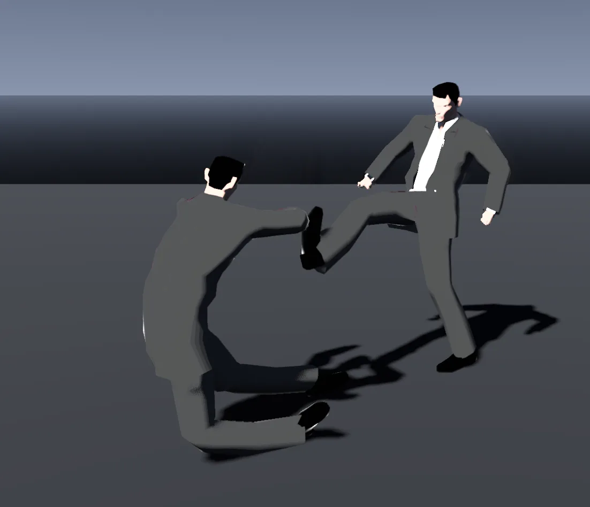
액티브 랙돌. 맞는 쪽만큼은 확실히 좋아졌습니다.
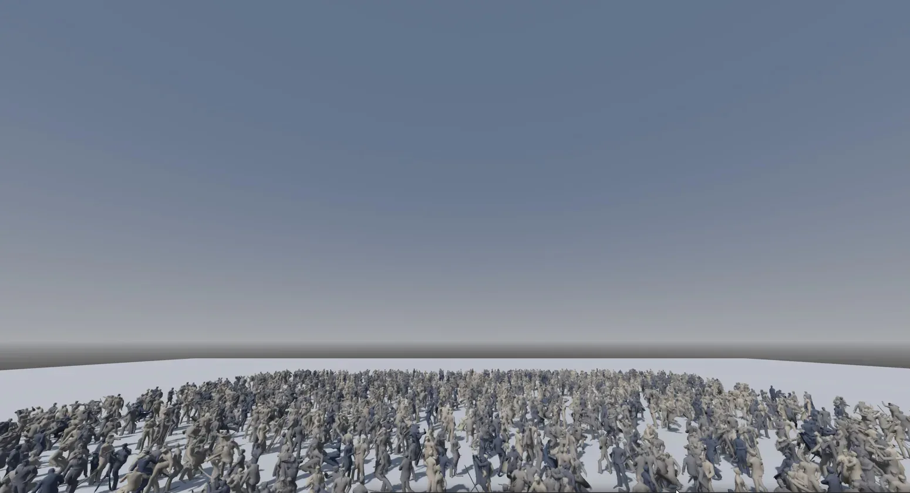
사람이 많아야 도시 같은데, 사람이 많으면 프레임이 죽습니다.
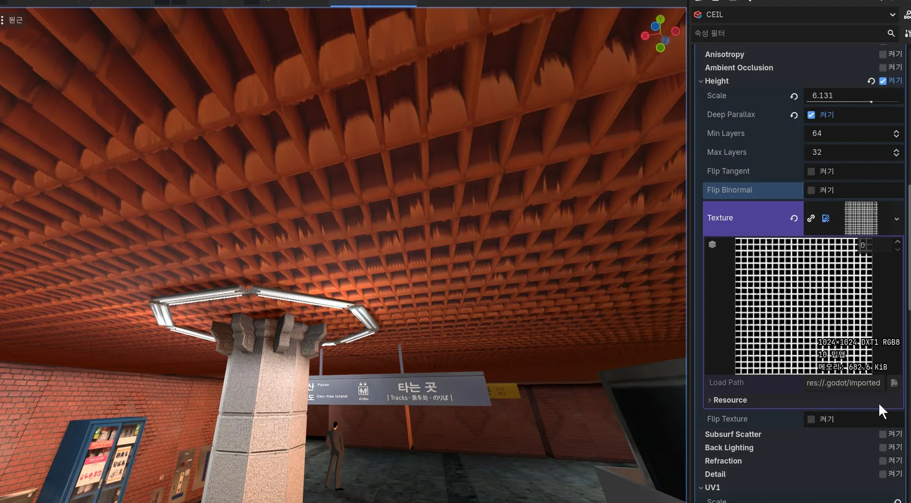
주황색 격자 천장은 진짜 요철이 아니라 속임수입니다.
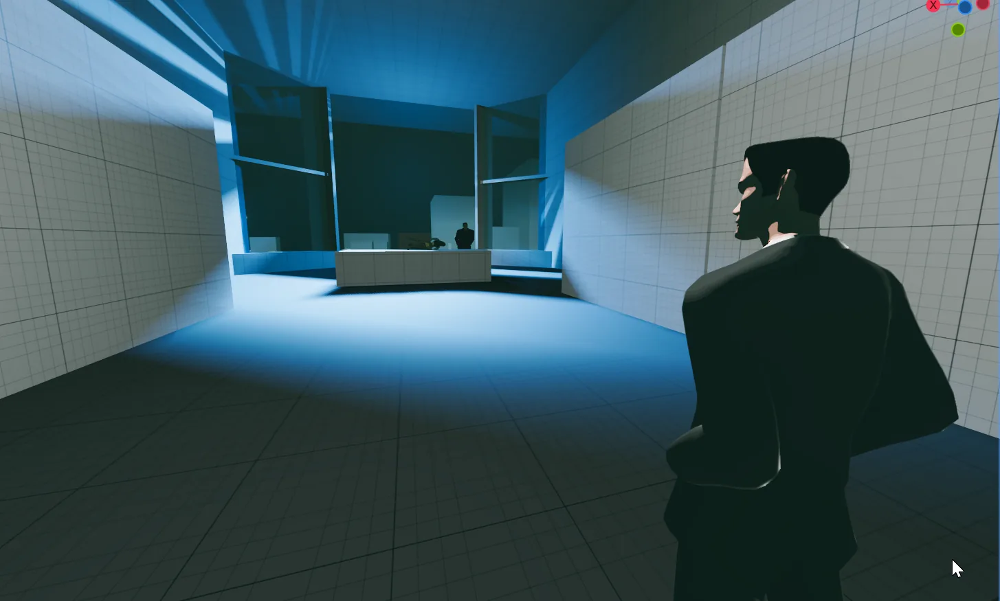
이런 빛을 만들고 싶어서 계속 파는 중입니다.
사이트를 열었습니다
게임을 만들기 시작한 지 1년쯤 됐고, 갈메기도 이제 남에게 보여줄 수 있을 정도로 형태가 잡혀가고 있습니다. 작업하면서 생기는 실패와 실험, 화면이 크게 달라진 날들을 따로 남겨두려고 사이트를 열었습니다.
완성된 개발기를 정리해서 올리기보다는, 만들다가 막힌 것과 버린 것까지 같이 기록할 생각입니다. 나중에 제가 다시 봐도 그때 뭘 붙잡고 있었는지 알 수 있는 정도면 충분합니다.
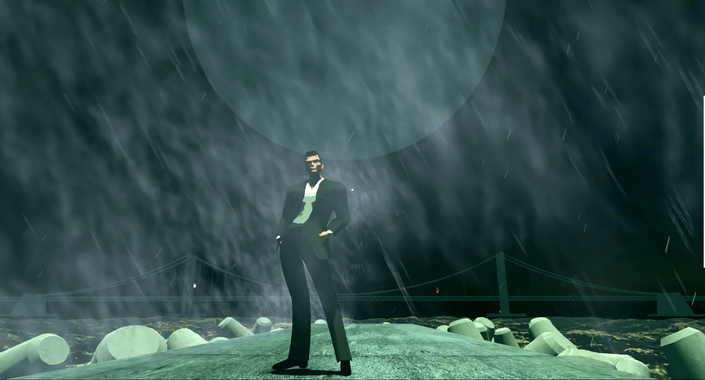
게임에 이름이 생겼습니다
8월 초에 잠깐 팀으로 프로젝트를 굴려봤습니다. 혼자 들고 있던 파일을 다른 사람에게 보여주려니, 그동안 대충 넘겼던 것들이 한꺼번에 보였습니다. 당시에는 프로젝트 이름을 Sam in Busan으로 붙이고 타이틀 아트를 부팅 화면에 걸었습니다. 이름 하나 붙었을 뿐인데 테스트 빌드가 갑자기 게임처럼 보였습니다.
남에게 바로 보여주려면 브라우저에서 열리는 빌드가 필요했습니다. 처음 뽑은 웹 패키지는 1.4GB였습니다. 텍스처 해상도를 줄이고, 이미지를 다시 압축하고, 안 쓰는 에셋을 걷어내고, 미리 gzip으로 눌러 678MB까지 내렸습니다. 여전히 크지만 일단 클릭해서 기다리면 열리는 수준까지는 왔습니다. 로딩 화면에는 스토리와 조작법을 넣었습니다. 어차피 기다릴 시간이 생기니 빈 화면으로 두고 싶지 않았습니다.
이 시기에 제일 오래 켜놓고 놀았던 건 Y2K 필터였습니다. 화면을 일부러 낮은 해상도로 뭉개서 2000년대 초 게임처럼 보이게 만드는 필터입니다. 기본 화면으로 쓰지는 않았지만, 장면이 얼마나 쉽게 다른 시대처럼 보이는지 확인하는 데는 꽤 재미있는 실험이었습니다.
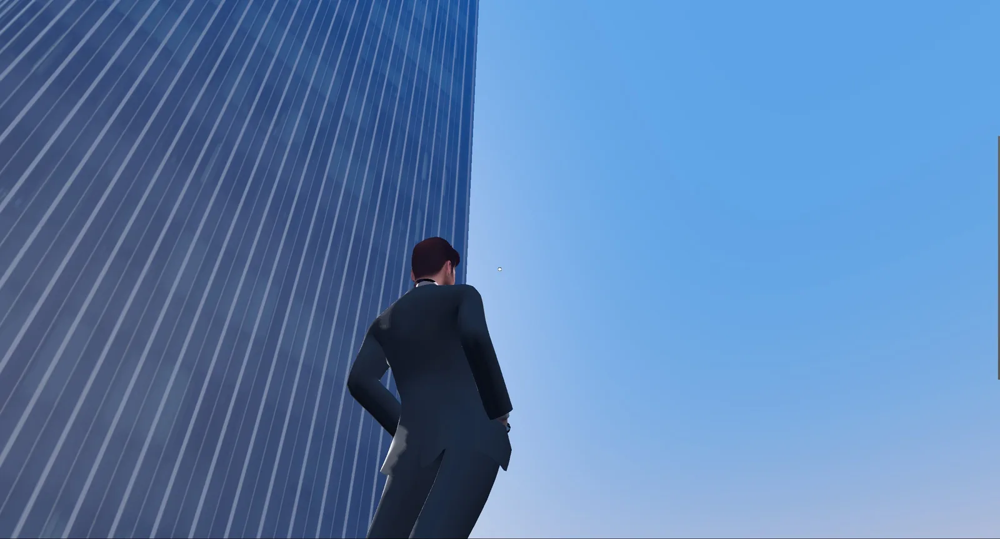
이름이 생긴 남자.
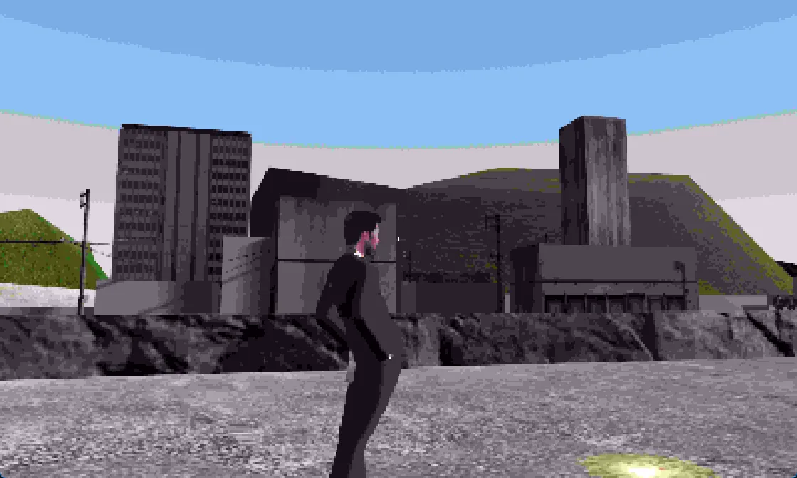
Y2K 감자 필터. 실용성은 없지만 즐거웠습니다.
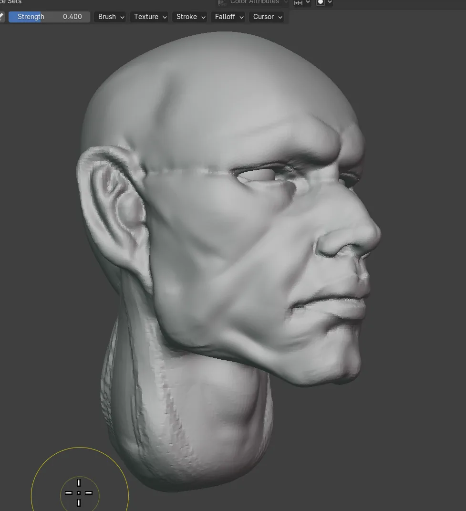
얼굴은 여전히 손으로 팝니다.
비 만드는 데 일주일을 썼습니다
7월 말부터 물을 계속 만졌습니다. 침수에서 시작해서 파도, 비, 폭풍우까지 이어졌습니다. 비는 떨어지는 물방울보다 바닥에 닿은 뒤가 더 어려웠습니다. 튀는 위치가 일정하면 도장 찍은 무늬처럼 보이고, 완전히 무작위로 흩어놓으면 이번에는 비처럼 보이지 않았습니다. 물방울보다 그 작은 튐을 고치는 데 훨씬 오래 걸렸습니다.
셰이더는 아직 강의 영상을 옆에 띄워놓고 따라 만들면서 익히고 있습니다. 이론부터 정리해서 들어가기보다 원하는 그림이 나올 때까지 값을 움직여보는 쪽에 가깝습니다. 느리지만, 가끔 의도하지 않은 결과가 더 마음에 들어서 그대로 남기기도 합니다.
환경 작업을 줄이려고 작은 도구도 몇 개 만들었습니다. 전깃줄을 자동으로 늘어뜨리는 도구, 에셋을 지면에 맞춰 뿌리는 배치기, 깨진 리소스 참조를 찾아 고치는 리솔버입니다. 마지막 것은 한 번 잘못 건드려 되돌리기 힘든 상태까지 가서, 백업부터 만든 다음 다시 시작했습니다. 비가 내리는 화면은 몇 장으로 끝나지만 그 뒤에는 이런 자잘한 실패가 훨씬 많이 남습니다.
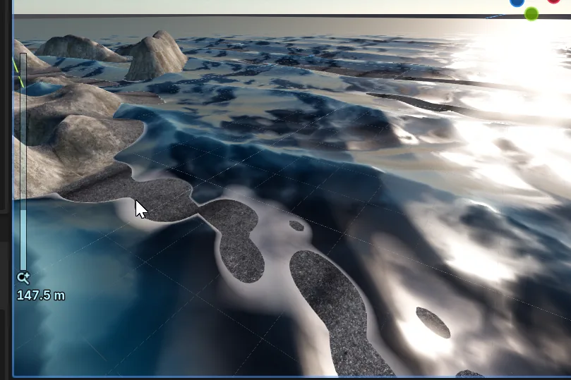
파도. 여기까지 오는 데 며칠이 걸렸습니다.
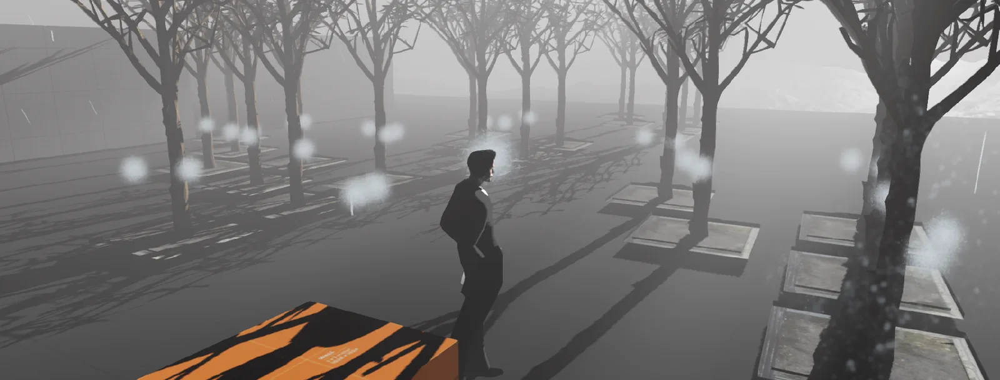
비와 안개. 이 그림 하나 보려고 일주일을 썼습니다.
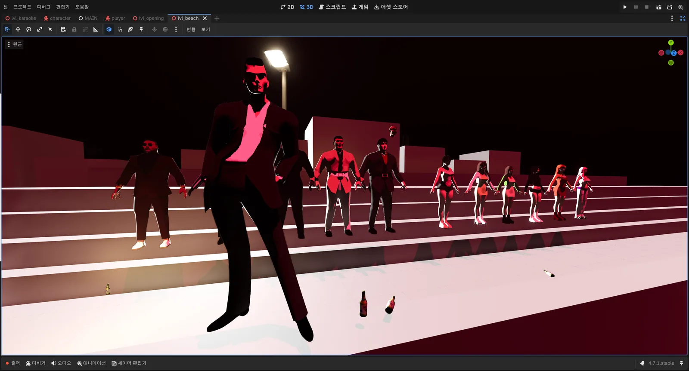
밤 해변. 색으로 분위기를 잡는 연습.
게임보다 편집기를 더 많이 만들었습니다
7월에는 플레이어가 직접 보지 못하는 걸 많이 만들었습니다. 대사 편집기, 시퀀스 편집기, NPC별 대화 편집기, 세이브 시스템입니다. 처음에는 화면에 나오지도 않는 데 시간을 너무 쓰는 것 같았습니다. 그런데 컷신 하나를 손으로 짜는 데 두 시간 걸리던 게 십 분 정도로 줄어드니 생각이 바뀌었습니다. 한 번 귀찮게 만들어두고 계속 덜 귀찮아지는 쪽이 혼자 만들 때는 훨씬 낫습니다.
아트 쪽에서는 부산 거리를 채울 소품을 계속 만들었습니다. 가게 셔터, 어린이보호 표지판이 붙은 스테인리스 난간 같은 것들입니다. 한국 거리에서 너무 흔해서 눈에 잘 안 들어오는데, 막상 에셋 스토어에서는 찾기 힘든 물건들입니다. 직접 찍고 다듬어 넣고 있습니다. 이런 평범한 물건이 쌓여야 배경이 부산처럼 보입니다.
동료 시스템도 이때부터 손댔습니다. NPC 하나를 플레이어 뒤에 붙이는 건 어렵지 않은데, 따라다니는 동안 바보처럼 보이지 않게 하는 게 훨씬 어렵습니다. 문턱에 걸리고, 절벽 쪽으로 가고, 너무 가까이 붙어서 등을 밀어댑니다. 지금도 완전히 해결된 부분은 아닙니다.
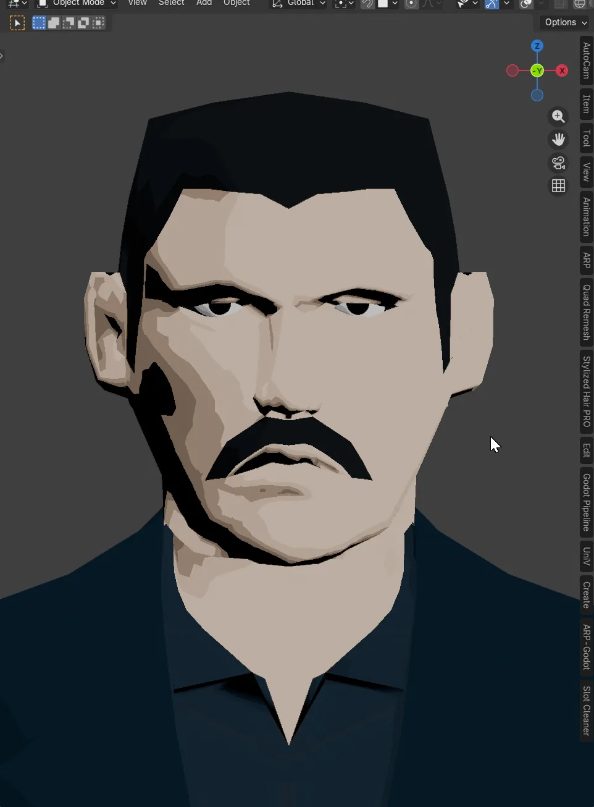
면을 최대한 줄이면서 인상은 남기기.
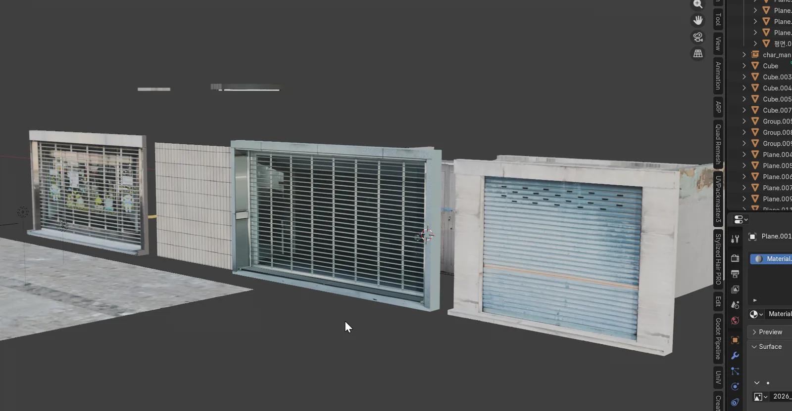
가게 셔터. 이런 건 어디서도 사올 수 없습니다.
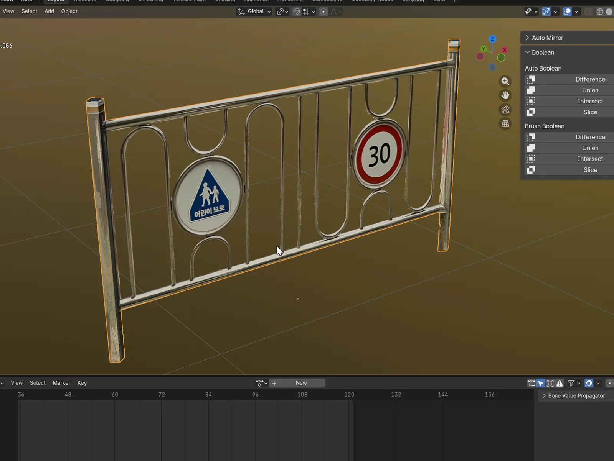
이 난간을 보고 부산이라고 느끼면 성공입니다.
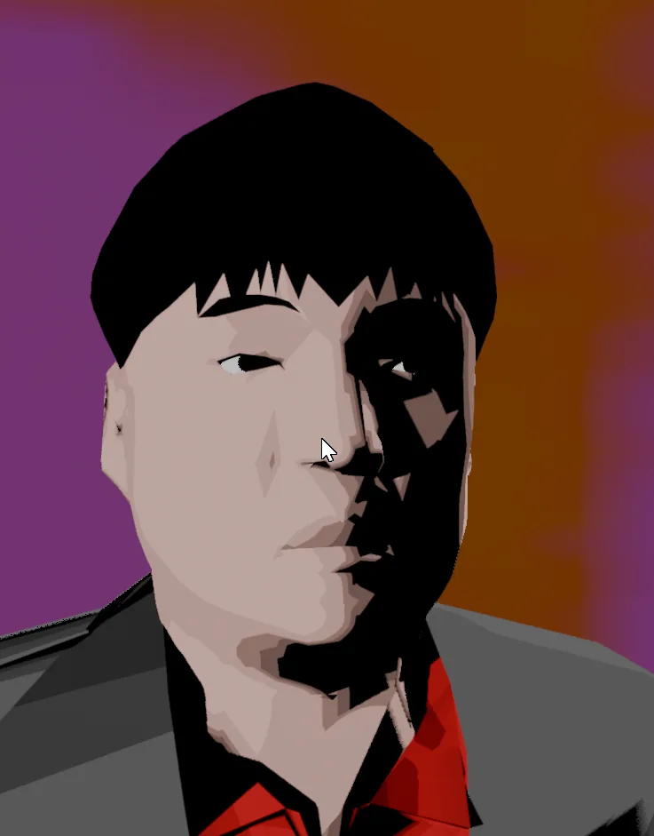
조명 하나로 인물이 달라 보입니다.
AI에게 코드를 맡기기 시작했습니다
6월 9일에 처음으로 AI에게 코딩을 맡겨봤습니다. 시네마틱 카메라와 메인 메뉴, 인벤토리 같은 기능이 며칠 사이에 생겼습니다. 속도는 확실히 빨랐지만, 수정 범위를 제가 정확히 잡지 못하면 다른 곳까지 같이 바뀌었습니다. 한 번은 회피 동작이 통째로 망가져서 원인을 찾다가, 요청하지 않은 애니메이션 트리까지 수정돼 있는 걸 발견했습니다. 그 뒤로는 작업을 시키기 전에 저장하고, 끝나면 바뀐 범위를 먼저 확인하는 습관이 생겼습니다.
반대로 잘 맞는 작업도 있었습니다. 도시 프로토타입에서는 Blender에 배치해둔 박스 72개의 크기를 읽고, 그 자리에 맞는 건물 에셋을 바꿔 끼우게 했습니다. 건물 68개와 도로 4개가 몇 분 안에 들어갔습니다. 손으로 반복 배치하는 작업은 이런 식으로 넘기는 게 확실히 편했습니다.
6월 하순에는 골반 뼈와 계속 싸웠습니다. 상체와 하체를 따로 움직이려면 골반을 분리해야 하는데, 연결을 잘못 건드리면 다리 길이가 틀어지고 몸 전체 스키닝이 무너졌습니다. 아래에 뼈대가 사방으로 터진 화면이 그 과정 중 하나입니다. 결국 골반 분리와 IK를 같이 손보면서 지금의 기본 뼈대가 만들어졌습니다.
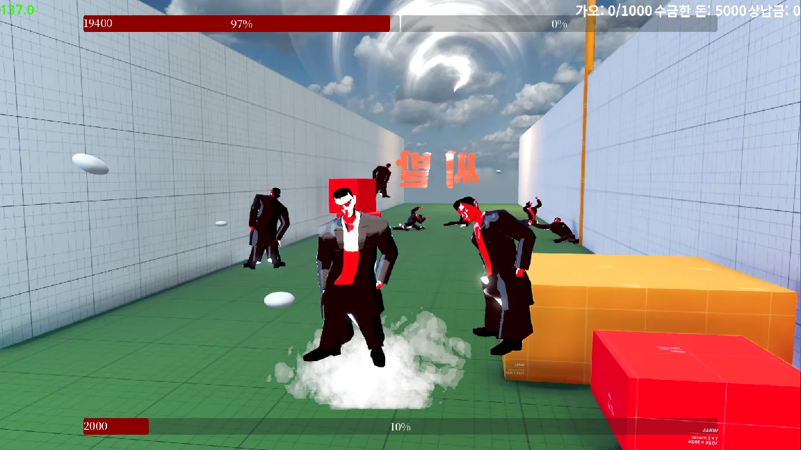
화면 위쪽의 "가오 0/1000"이 이 게임의 핵심 수치입니다.
처음 만든 건 쓰러지는 사람이었습니다
이 글은 8월에 사이트를 연 뒤, 비어 있던 초반 기록을 메우려고 돌아와 쓴 글입니다. 프로젝트를 처음 정리한 건 5월 중순이었습니다. 그때는 맵도 세계관도 거의 없었고, 초록색 바닥과 흰 박스 몇 개가 전부였습니다.
제일 먼저 만든 건 맞고 쓰러지는 사람이었습니다. 액션 게임을 만들기로 했을 때 가장 먼저 보고 싶었던 게 주먹을 맞고 볼링핀처럼 넘어지는 그림이었습니다. 첫 사진이 그때 화면입니다. 아무것도 없는 테스트 맵인데, 사람 하나가 제대로 자빠지는 것만으로 이미 게임처럼 보였습니다.
피격 판정은 처음에는 몸에 상자를 대충 붙여두는 방식이었습니다. 곧 그 상자를 물리 뼈대에 직접 매달았습니다. 주먹이 머리에 닿았는지 몸통에 닿았는지 뼈 단위로 알 수 있게 되면서, 맞는 방향과 넘어지는 모양을 다르게 만들 수 있었습니다.
세계관 쪽에서는 게임 안에 인터넷 게시판을 먼저 만들었습니다. 부산 뒷골목에서 굴러다니는 주인공에 대한 소문이 지하 격투 갤러리에 올라오는 식입니다. 전투와 맵보다 게시판 화면이 먼저 완성됐다는 게 지금 봐도 이 프로젝트답습니다.